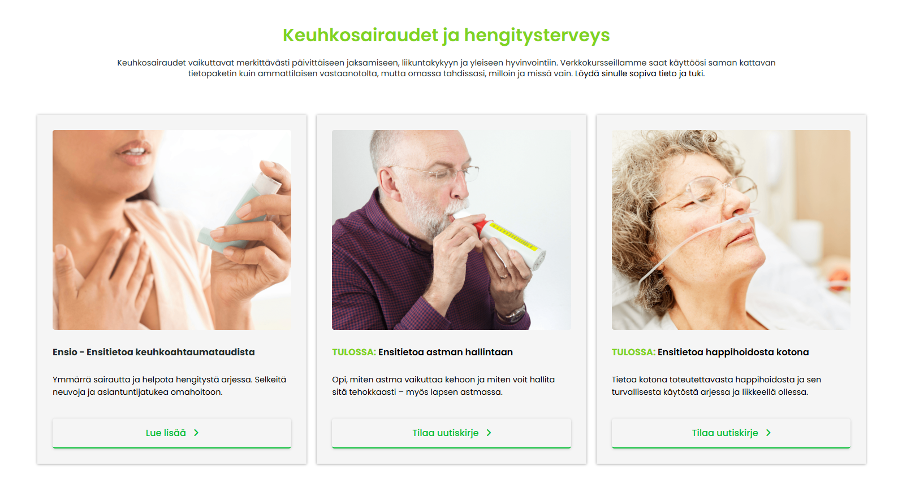
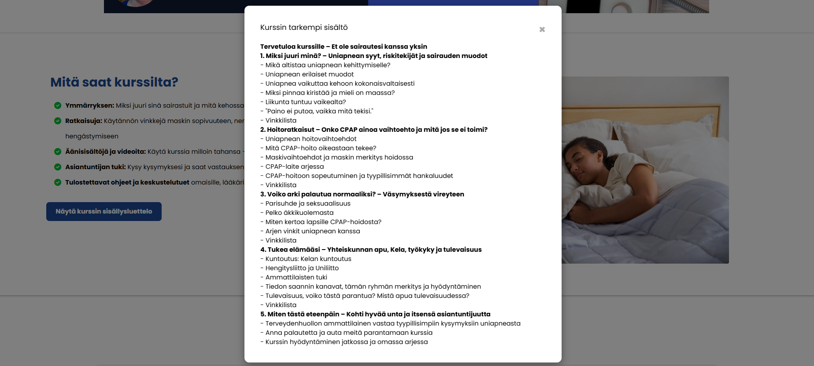

Yrityksen verkkosivut
Tapahtuma- ja verkkosivut | Systeme.io + UI/UX + HTML/CSS/JS
Kuvaus
Systeme.io-alustalla toteutetut sivut terveysalan yrityksen verkkokursseille ja webinaareille.
Roolini ja toteutus
Tein kurssien tuotekortit, ostopolut, myyntisivut ja tapahtumasivut. Hyödynsin myös HTML-, CSS- ja JavaScript-koodia tuodakseni sivuille lisätoiminnallisuuksia.
Keskeiset ominaisuudet
- Brändin mukainen UI/UX
- Myyntisivut ja ostopolut
- Interaktiiviset elementit (HTML/CSS/JS)
- Sisällöntuotanto ja tone of voice
Opitut asiat
Verkkosivujen suunnittelu ja toteutus, käyttäjäkokemus, Systeme.io-alustan käyttö.
Teknologiat
Systeme.io, HTML, CSS, JavaScript, Canva


